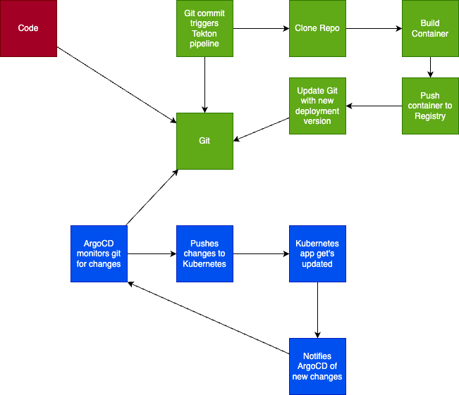

2: Flow
The flow we will be doing today, looks like this.
It’s split up, into Continius Integration (CI) and Continius Delivery (CD), with Git in the Center as the “Source of truth”

It’s triggered by a commit to Git, that updated the code or container, or deployment configuration.
Depending on which, a flow will be triggered automatic, that will end up in a new version of the application being deployed.